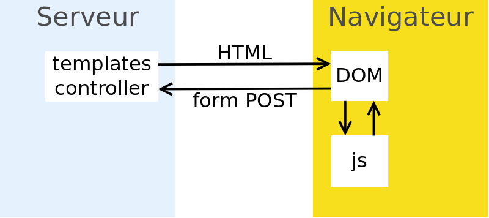

Vue.js en 2021
pascal @ rigaux.org
Plan
- Mes expériences
- Contexte
- Javascript récent
- Typescript
- npm
- Single Page Application
- Vue.js
- comparé à jQuery
- comparé à React & Angular
- Vue3
- outils & librairies
Mes expériences
- 2000-2009 : Perl, OCaml...
- 2010 : arrivée à la DSI de l'université Paris 1 (Panthéon Sorbonne)
➡ débuts en dev web (PHP, Java, Perl, Javascript) - 2013 : un projet migré de JSF vers AngularJS
- 2015 : un projet créé en Node.js & AngularJS
- 2017 : plusieurs projets migrés de AngularJS à Vue.js
- 2021 : petits projets migrés de Vue 2 en Vue 3
Javascript récent
Standard on most browsers (except Safari 9 or IE)« standard pas toujours respecté » par les navigateurs ? FAUX
« class » disponible dans Javascript, pas que Typescript
« { addresse } au lieu de { address: address } » disponible dans Javascript, pas que Typescript
class Meal { … }import { foo } from 'ma_lib.js'(e) => e+1`Hello ${name}`return { x, y }const { x, y } = position(){ x, ...pos }
Plus récent :
Javascript récent
Classes & this
class Meal {
constructor(food) {
this.food = food
}
eat() {
const food = this.food
this.food = null
return food
}
}this n'est pas optionnel en Javascript.
Javascript récent
Classes & arrow functions
|
|
Limite : ne pas les utiliser pour définir des méthodes
Javascript récent
L'alternative aux classes :| Classes | Method properties | Le couteau suisse |
|---|---|---|
|
|
|
- utilisé par la Composition API de Vue 3
- utilisé pour les React Hooks (exemple)
Javascript récent
 Callback hell ?
Callback hell ?
résolu avec async/await !
| Javascript | Kotlin |
|---|---|
|
|
|
|
|
|
|
|
Javascript récent
Tendances
- utilisation de Webpack/Rollup/esbuild pour bundle/minify/cache-buster (exemple)
- utilisation de Typescript
- utilisation de babel/esbuild/tsc pour écrire du Javascript récent qui tourne sur des vieux navigateurs
Typescript
- won over Dart/Flow (Google abandonne AngularDart, mais au profit de Flutter)
- de plus en plus de librairies sont en Typescript, d'autres fournissent leurs types (fichiers .d.ts) ou sont fournis sur DefinitelyTyped
- qques fonctionnalités en plus de Javascript, notamment les parameter properties, decorators (expérimental), JSX
- biggest gradual typing success (see also "dynamic" in C#/kotlin)
- vérifié à la compilation, mais ignoré à l'exécution
- les navigateurs gèrent des js.map pour les msgs console, pour le débogueur...
Typescript
Adapté à Javascript
- Permissif !
"" + 1
"" + (() => 1)
(1 as any)[0]any is hell ü§Æ but useful ü§´
toujours utiliser strict qui implique noImplicitAny
(mais peut-être désactiver "strictNullChecks" et "useUnknownInCatchVariables")
Typescript
Adapté à Javascript
- Puissant
capable de gérer : Union & Intersection types, Duck Typing, anonymous object types...type StringOrNumber = string | number; type ProcessStates = "open" | "closed"; type OddNumbersUnderTen = 1 | 3 | 5 | 7 | 9;
Typescript
Suffisament puissant pour typer l'alternative aux classes :| Classes | Method properties | Le couteau suisse |
|---|---|---|
|
|
|
npm
Le gestionnaire de paquets de node.js
- utilisé pour les outils (create-react-app, vue-cli, vite, webpack...)
- ces outils sont en Javascript/Typescript, mais on commence à en voir en Go (esbuild) (binaires statiques)
- gèrent notamment le transpiling, mais attention aux besoins en polyfills pour les vieux navigateurs
- utilisé pour télécharger les librairies client-side
(react, vue, axios, lodash...) car Bower a perdu la course - semver et package-lock.json (ou yarn.lock)
Single Page Application ?
Page web classique
Single Page Application ?
Page web classique

Single Page Application ?
Partial updates

Single Page Application ?
Mixte
Single Page Application ?
Single Page Application

Single Page Application
- toute la navigation est faite en Ajax
- toutes les actions sont faites en Ajax :
➡ on s'abstrait des contraintes des <form> HTML
➡ les donn√©es client->serveur peuvent √™tre complexes - templates transform√©s en javascript ex√©cut√© dans le navigateur
- routage avec URLs (grâce à History API)
- données de navigation conservées en mémoire dans le navigateur
- la session serveur ne stocke que le login ! re-log transparent
- debug facile dans le navigateur (instruction
debugger)
SPA Javascript vs JSF
inconvénients de Vue/React/Angular
- le code serveur doit être plus fiable, le spoofing des paramètres d'entrée étant facile
- validateurs souvent dupliqués côté client
- rôles vérifiés côté client et côté serveur
- traductions côté client et un peu côté serveur (pour l'envoi de mails par exemple)
avantages
- réactivité de l'interface
- bonne intégration avec le javascript :)
- simple de faire des composants UI réutilisables
- plugins navigateur facilitant l'inspection des composants & état
SPA Javascript
inconvénients
- plus gourmand qu'une page web sans JS, notamment si utilisation de beaucoup de libraires ! (mais possibilité de charger dynamiquement les libs uniquement pour certaines URLs)
- indexation plus compliquée (pour les moteurs de recherche) : peut nécessiter SSR
- prévenir les clics doublés pendant l'attente
- nécessiter un navigateur récent (pas de MSIE avec Vue 3)
sécurité et mises à jour
IMO pas un vrai sujet car tourne dans le navigateurPrésentation de Vue.js
| Angular « sur le marché depuis plus longtemps » ?? FAUX : React (2013) profité du temps de dev de Angular >= 2 (2016) pour percer Angular a « bien plus d'outils et librairies compatibles » ?? pas sûr, écosystème React très riche performance : Angular n'est PAS plus performant (comparaison) |
Vue.js
jQuery
Surcouche aplanissant les différences entre les navigateurs : moins utile depuis que les vieux IE sont morts
jQuery - Vue.js
Exemple
|
|
à partir d'un état conservé en mémoire (
data + props)
jQuery - Vue.js
Exemple 2
|
|
Éléments de choix
| React | Vue.js | Angular | |
|---|---|---|---|
| documentation | bonne | ||
| apprentissage | moyen | moyen | long |
| flexibilité, nombreux choix à faire | oui | moyen | framework complet |
| poids | moyen | léger | moyen/gros |
| compilation | pour JSX | optionnel (nécessaire pour les Single File Component) | pour Typescript |
| vérification de types | possibilité d’utiliser Typescript | possibilité d’utiliser Typescript mais pas complètement mature dans IDE | Typescript |
Éléments de choix
(à prendre avec des pincettes !)| React | Vue.js | Angular | |
|---|---|---|---|
| taille équipe | petite | grande | |
| taille application | moyenne ou grande avec Redux | petite | grande |
| travail avec designers en HTML | difficile à cause de JSX | possible | possible |
| utilisé par | Airbnb, Dropbox, eBay, Facebook, Netflix... | Adobe, Alibaba, Baidu, Expedia, GitLab, Laravel, Xiaomi | Google, Microsoft, Deutsche Bank, Forbes, PayPal, Samsung |
Vue.js comparé à React
Vue.js a plus de fonctionnalités que React :- automatic dependency tracking (using proxy)
- two way data-binding using events
- moteur de template. En React danger d'avoir du HTML disséminé au milieu du code
- scoped css fourni avec SFC
Vue.js comparé à Angular
- templating un peu similaire (mais Angular manque v-else)
- props/events similaire à @Input/@Output
- utilisation des classes + décoration optionnelles
- pas de lib HTTP
Angular a les Observables... souvent trop complexes ! - pas de dependency injection (mais axios-mock-adapter)
Vue.js 3
- sorti en 2020 mais support migration en 2021
- écrit en Typescript, comme Angular
- meilleur support typescript
- Composition API, alternative à l'Options API
- inspiré des React Hooks alternative aux Class Components (exemple) sortis en 2019
- NB : différences importantes
- pas compatible Internet Explorer
Vue.js tooling
- vue-cli : comparable à create-react-app (mais plus customisable sans "eject") ou à Angular CLI
- mieux : üòç Vite
- super performant en dev :
- esbuild pour les librairies
- pas de bundling pour les sources, utilisation directe de l'import des modules
- out-of-band typescript type checking
- compatible React
- envié par Angular
- super performant en dev :
Vue.js tooling
- IDE recommandé pour Vue 3 : VSCode avec Volar
- üòç Vue Devtools pour Chrome/Firefox
- Vuex, equivalent de Redux / NgRx. Pratique avec plugin navigateur : permet le retour dans le passé
- Vue Router
- Component Testing avec Vue Test Utils
- SSR pour SEO : possible mais je ne connais pas